2 搭建Object Detection环境
2.1 安装TensorFlow模型库
新建一个文件夹，本文示例为：odapi_gwt;
下载包：
1) 通过网址下载https://github.com/tensorflow/models/archive/master.zip，下载失败的话，多试几次即可；
2) 通过git下载项目到本地，项目地址https://github.com/tensorflow/models；
复制压缩包到刚才新建的文件夹，解压到当前文件夹，并重命名modes_master 变为models；
新建的文件夹结构应该如下所示：
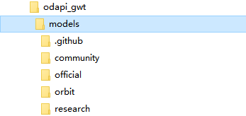
2.2 Protobuf安装与编译
Tensorflow目标检测API使用Protobufs来配置模型和训练参数。在使用框架之前，必须下载并编译Protobuf库。
2.2.1 下载protoc
下载网址https://github.com/google/protobuf/releases，选择最新的python版本下载。
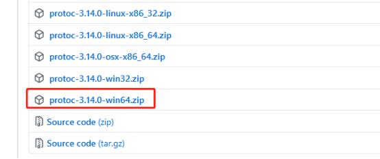
2.2.2 验证
将解压后bin文件中的protoc.exe复制到C:\Windows\System32下，打开cmd，运行protoc，不报错即可。
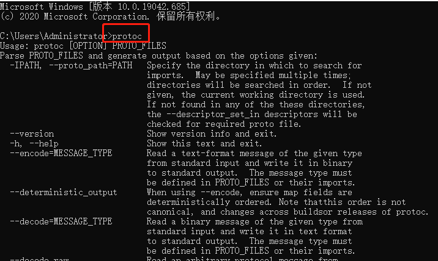
2.2.3 编译
此时打开 models\research\object_detection\protos，里面后缀全是.proto的文件，编译成功的话，每个.proto文件都会对应一个.py文件。否则编译失败。
打开E:\odapi_gwt\models\research，选中路径输入cmd，可快速进入该文件夹中
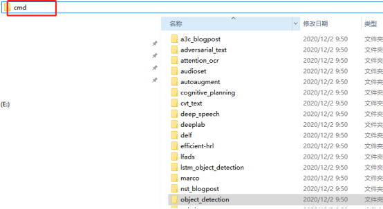
执行powershell
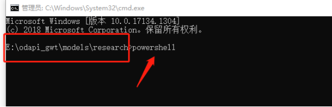
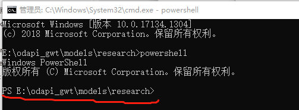
运行命令
==Get-ChildItem objectdetection/protos/*.proto | Resolve-Path -Relative | %{ protoc $ --python_out=. }==
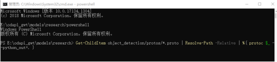
运行完毕
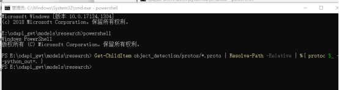
查看models\research\object_detection\protos中文件的后缀即可。
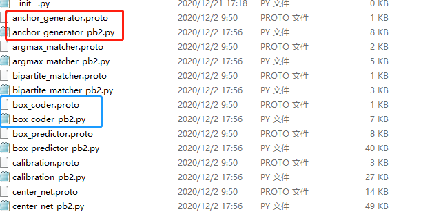
2.3 安装COCO API
2.3.1 安装cython
激活虚拟环境，安装包cython。
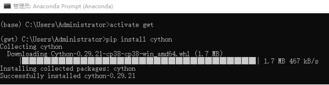
2.3.2 下载coco api压缩包
项目地址：https://github.com/philferriere/cocoapi，下载
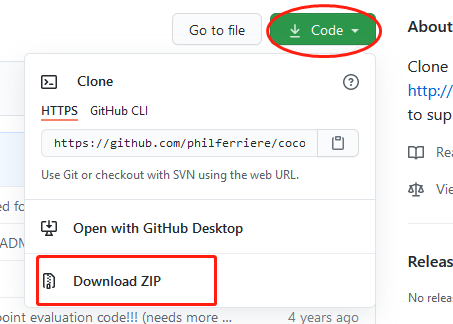
解压，
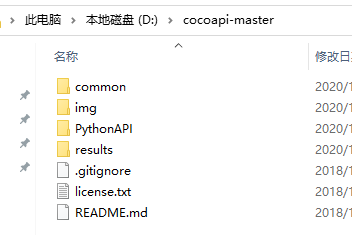
2.3.3 安装
安装前确定电脑里安装了Visual C++ 2015，下载地址，https://go.microsoft.com/fwlink/?LinkId=691126 )，默认安装即可。
cmd,激活虚拟环境，并打开解压的路径
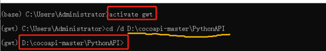
运行命令
==python setup.py build_ext install==
如果出现下面错误：
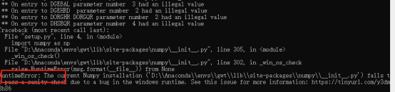
Numpy版本问题，需要运行pip install numpy==1.9.3，再次执行命令即可。
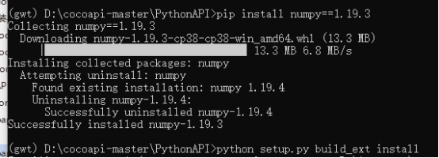
验证安装，运行jupyter notebook,
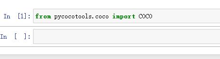
2.4 安装Object Detection API
激活虚拟环境，运行命令，打开E:\odapi_gwt\models\research
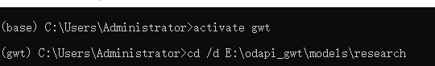
然后运行命令
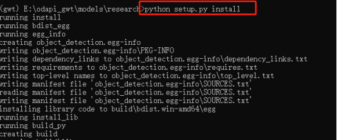
验证安装
如果出现错误
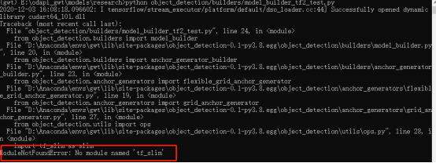
激活虚拟环境，安装即可
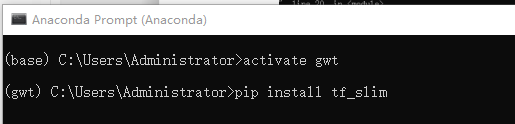